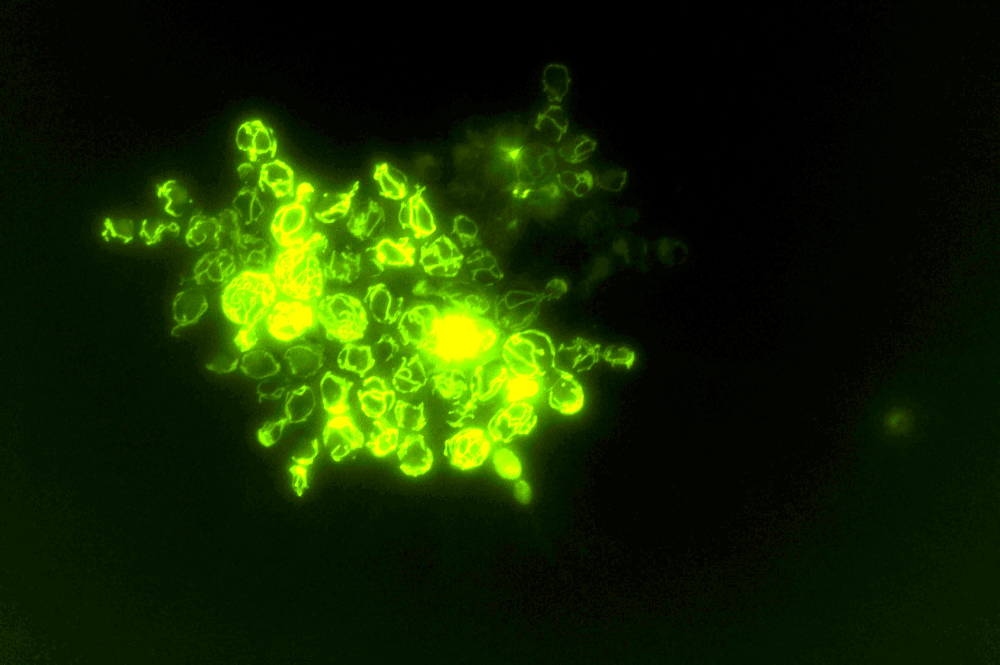

Our direction
Running the transition forward
The major transitions in individuality happened in the deep past, and the transitional forms are long extinct. We evolve multicellularity forward in the lab instead, transferring the populations daily and freezing samples as we go.
1 · The unanswered question
The hierarchy of biological individuality
Life is organized in nested levels: genes within chromosomes, chromosomes within genomes, genomes within cells, and cells within multicellular bodies. At each level, entities that once replicated independently became parts of a larger individual. Biology has a detailed account of what happened at each of these levels, but no general explanation for why such transitions occur.
“That life is hierarchically organized, with species composed of populations, populations of individuals, individuals of cells, cells of organelles, organelles of genomes, genomes of chromosomes, and chromosomes of genes, is so obvious an observation that it is quite remarkable that we have no general explanation of why this is so.”
2 · Why this layer in particular
The importance of multicellularity
The origin of multicellular life was one of the most transformative events in the history of life on Earth. It allowed for the evolution of the large, complex organisms we see today, and nearly every organism visible without a microscope is a product of it.
“…if all multicellular eukaryotes suddenly vanished from Earth, our planet would appear as barren as Mars.”
3 · The obstacle
The problem of looking backwards in time
Understanding the evolution of complex multicellular individuals from unicellular ancestors has been extremely challenging, largely because the first steps in this process occurred hundreds of millions of years ago. As a result, transitional forms have been lost to extinction. What is left to study is the finished product, and it is tempting to read the regulatory machinery of a modern animal or plant backwards into the origin. As an analogy, engineers studying the space shuttle might find it nearly impossible to infer from it how the Wright brothers constructed their first plane.
4 · The catch
Development came after multicellularity
Development is the obvious candidate explanation. Transcriptional programs, cell-type specification, and controlled morphogenesis are what allow a group of cells to build a body. But these developmental systems are themselves multicellular adaptations, evolving long after the origin of multicellularity, so they cannot explain how the process started.
A simple group of cells has none of that machinery. It has geometry, mechanics, and whatever its cells were already doing as single cells. The question we address is how simple cell groups like these can begin the process of open-ended multicellular evolution and gradually become more complex.
5 · Our approach
Long-term experimental evolution as an alternative approach
The MuLTEE is our approach to the problems above. Working out how multicellularity arose many millions of years ago is extremely difficult, and working out which steps were needed, and in what order, is harder still: those early steps are obscured by modern developmental systems, which solve hurdles that multicellularity had to overcome yet could not have been present when it began. Instead, through an evolution experiment, we let our model organism undergo its own evolutionary transition. The path it takes cannot tell us with certainty the route that any particular clade took in the past, but it reveals principles of these transitions that can be extrapolated into a more general understanding of the origin of multicellularity, and of evolutionary transitions as a whole.
The MuLTEE's fifteen populations of snowflake yeast have been under daily selection since 2018. How it began is told on The Story page, and how it works on How the experiment works.
A recurring finding is that biophysics supplies, for free, several properties usually thought to depend on development. Branched growth makes cluster size highly heritable (Ratcliff et al. 2015; Herron et al. 2018). The way cells pack makes group traits reproducible without developmental regulation (Day et al. 2022). Entangled branches give tough, millimetre-scale bodies (Bozdag et al. 2023; Day et al. 2024). Metabolically driven flows move nutrients through large clusters without any transport organ (Narayanasamy et al. 2025).
Our model system has to be created by evolution, so keeping the experiment running is the core of the project. A frozen population can be revived years later and measured with instruments that did not exist when it was frozen. To our knowledge the MuLTEE is the only experiment of its kind.
6 · 2025–2035
Research priorities for 2025–2035
Over the next decade we will focus on four priorities.
-
01
The origin of multicellular development
How transcriptionally regulated cell differentiation emerges, and whether the appearance of distinct cell types is what entrenches multicellularity.
-
02
The evolution of reproductive specialization
Whether entanglement provides a biophysical route to reproductive division of labor, and how that could scaffold true germ-soma differentiation.
-
03
The evolution of novel multicellular traits
Novel traits such as the metabolically driven fluid flows that permit exponential growth beyond the diffusion limit.
-
04
How multicellular evolution changes cell biology
Reductive mitochondrial evolution in the anaerobic lines, and how whole-genome duplication and the aneuploidy that follows it fuel adaptive radiation.
7 · The horizon
The long-term commitment
Lenski's E. coli lines have run since 1988 and are still producing results that could not have been anticipated when they began. Peter and Rosemary Grant studied Darwin's finches on Daphne Major for forty years. The MuLTEE is planned on the same scale, which means the daily transfers, the freezer, and the completeness of the record matter more than any single result. We hope to develop a model system that will be used by researchers around the world, long after our own careers are over.